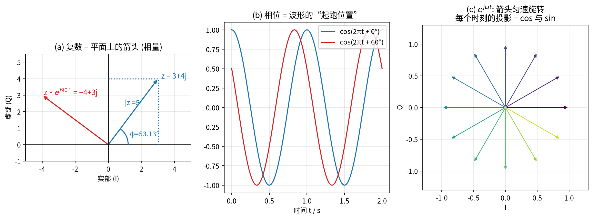
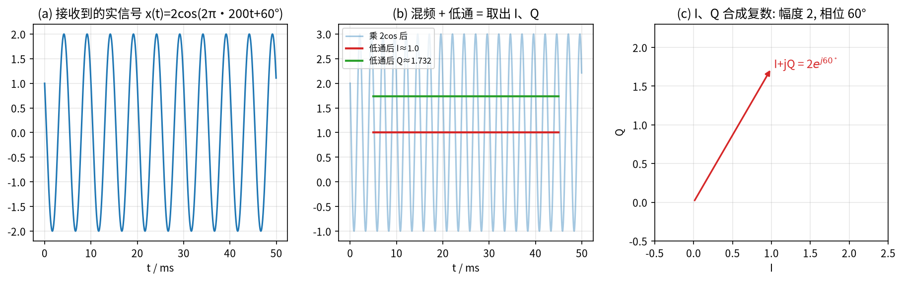
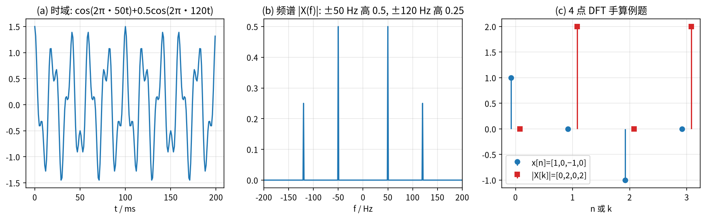
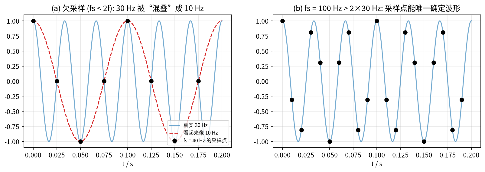

第 0 章 数学与信号准备：复数、相位、频谱与采样¶
本章目标
- 把复数当作“平面上会转的箭头”，会用它表示幅度和相位，能手算 \(|z|\)、\(\angle z\) 和乘以 \(e^{j\varphi}\) 的效果；
- 理解雷达接收机为什么输出 I/Q 两路，以及 I/Q 合起来就是一个复数；
- 理解傅里叶变换在做什么（“把信号拆成不同频率的旋转箭头”），能手算一个 4 点 DFT；
- 理解采样定理和“混叠”，知道 FFT 的频率轴怎么读。
本章是全书的“地基”。后面所有雷达与 ISAR 的推导，本质上只用到四件事：复数指数 \(e^{j\varphi}\)、傅里叶变换、采样、卷积/相关。如果你学过信号与系统，可以快速浏览；如果有些生疏，请慢慢看完每个例题——后面会频繁回到这里（正文中写作“→ 第 0.x 节”）。
0.1 复数、幅度与相位¶
直觉
把复数想成一根箭头。 一个复数 \(z = a + jb\) 就是平面上从原点出发、指向点 \((a,b)\) 的箭头。箭头的长度叫幅度（模），箭头与横轴的夹角叫相位（辐角）。
钟表的指针就是很好的类比：指针长度不变，时间推移时它不停地转——这正是后面“相位随时间变化”的样子。
直角坐标与极坐标两种写法。 记 \(j=\sqrt{-1}\)（工程里用 \(j\)，避免和电流 \(i\) 混淆），则
其中：
- \(a = \operatorname{Re}\{z\}\)：实部，箭头在横轴上的投影；
- \(b = \operatorname{Im}\{z\}\)：虚部，箭头在纵轴上的投影；
- \(A\)：幅度，箭头长度，永远 \(\ge 0\)；
- \(\varphi\)：相位，单位是弧度（rad），\(\pi\ \text{rad} = 180^\circ\)；
- \(\operatorname{atan2}(b,a)\)：考虑了象限的反正切，取值在 \((-\pi,\pi]\)。
把两种写法连起来的是欧拉公式：
关键公式
它说明 \(e^{j\varphi}\) 是一根长度为 1、角度为 \(\varphi\) 的箭头。于是 \(A e^{j\varphi} = A\cos\varphi + jA\sin\varphi\)，实部 \(a=A\cos\varphi\)、虚部 \(b=A\sin\varphi\)，正好对上式 (0.1)。
复数乘法 = 长度相乘、角度相加。 设 \(z_1 = A_1e^{j\varphi_1}\)，\(z_2 = A_2e^{j\varphi_2}\)，由指数运算法则：
特别地，乘以 \(e^{j\theta}\) 就是把箭头逆时针转 \(\theta\)，长度不变。这条性质后面要用无数次：雷达里“距离变化”就体现为“回波乘上了一个 \(e^{j\theta}\)”。
例题
例题 0.1（手算复数）。 设 \(z = 3+4j\)。
- 幅度：\(|z| = \sqrt{3^2+4^2} = \sqrt{25} = 5\)。
- 相位：\(\varphi = \operatorname{atan2}(4,3) = 0.9273\ \text{rad} = 53.13^\circ\)。所以 \(z = 5e^{j53.13^\circ}\)。
- 转 \(90^\circ\)：\(e^{j90^\circ} = \cos 90^\circ + j\sin 90^\circ = j\)，于是 $\(z\cdot e^{j90^\circ} = (3+4j)\,j = 3j + 4j^2 = -4 + 3j .\)$ 检查：\(|-4+3j| = 5\)（长度不变），角度 \(= 143.13^\circ = 53.13^\circ + 90^\circ\)（角度加了 \(90^\circ\)）。
- 共轭：\(z^* = 3-4j\)（把箭头关于横轴镜像），且 \(z z^* = 3^2+4^2 = |z|^2 = 25\)。
最后一条 \(zz^* = |z|^2\) 也很常用：“乘以自己的共轭”可以消掉相位、只留下能量。匹配滤波、相干矩阵都是这个套路。
旋转的箭头 \(e^{j2\pi f t}\)。 如果角度随时间均匀增加，\(\varphi(t) = 2\pi f t\)，箭头就以每秒 \(f\) 圈的速度旋转。它在横轴上的投影是 \(\cos(2\pi f t)\)，在纵轴上的投影是 \(\sin(2\pi f t)\)。这就是“复指数信号”：
\(f>0\) 时箭头逆时针转，\(f<0\) 时顺时针转——所以复信号里负频率是有意义的，它表示转动方向相反。这一点在多普勒里很重要：目标朝向雷达和远离雷达，多普勒频率符号相反。

相位与距离：一个提前预告的例子。 电磁波每走一个波长 \(\lambda\)，相位就转一整圈 \(2\pi\)。雷达回波要“去一趟、回一趟”，所以目标距离变化 \(\Delta R\) 时，往返路程变化 \(2\Delta R\)，相位变化
例题
例题 0.2（相位有多敏感）。 X 波段 \(f_c = 10\) GHz，\(\lambda = c/f_c = 3\times10^8/10^{10} = 0.03\) m \(=3\) cm。若目标只移动了 \(\Delta R = 0.5\) cm：
半厘米的位移就让相位转了三分之一圈！这就是第 2 章 ISAR 能“看清”横向细节的原因，也是目标运动稍不平稳图像就会“散焦”的原因。
易错点
易错点。（1）相位只在 \(2\pi\) 范围内有意义：\(\varphi\) 和 \(\varphi+2\pi\) 是同一根箭头，所以“相位缠绕（wrapping）”后要“解缠绕（unwrap）”才能看出连续变化。（2）往返路程是 \(2\Delta R\)，所以是 \(4\pi\Delta R/\lambda\) 而不是 \(2\pi\Delta R/\lambda\)，漏掉因子 2 是最常见的错误。
0.2 I/Q 信号：雷达为什么输出两路¶
直觉
真实的天线只能接收实数电压，比如 \(x(t)=A\cos(2\pi f_c t+\varphi)\)。我们想知道的是幅度 \(A\) 和相位 \(\varphi\)，但一个实数波形“看一眼”很难同时读出这两个量。
办法是：用两个“参考尺”去量它——一个是 \(\cos\)，一个是 \(-\sin\)。量 cos 的结果叫 I（In-phase，同相），量 sin 的结果叫 Q（Quadrature，正交）。I 和 Q 分别就是箭头的横坐标和纵坐标。
机理（正交解调）。 把接收信号分别乘以 \(2\cos(2\pi f_c t)\) 和 \(-2\sin(2\pi f_c t)\)，再低通滤波（LPF）：
这里用到了积化和差公式：\(2\cos\alpha\cos\beta = \cos(\alpha-\beta)+\cos(\alpha+\beta)\)，\(-2\cos\alpha\sin\beta = \sin(\alpha-\beta) - \sin(\alpha+\beta)\)（取 \(\alpha = 2\pi f_ct+\varphi\)，\(\beta = 2\pi f_c t\)，于是 \(\alpha-\beta=\varphi\)）。
把两路合成一个复数，就回到了 0.1 节的箭头：
关键公式
这一步叫下变频到基带：把高频载波“剥掉”，只留下慢慢变化的复包络。雷达数据文件里存的复数矩阵（以及 CV-GNN、CvPGT 输入网络的“复值 ISAR 数据”）就是这样来的。
例题
例题 0.3（I/Q 手算）。 接收到 \(x(t) = 2\cos(2\pi\cdot 200t + 60^\circ)\)，即 \(A=2\)，\(\varphi=60^\circ\)。
- \(I = A\cos\varphi = 2\times 0.5 = 1\)；
- \(Q = A\sin\varphi = 2\times 0.866 = 1.732\)；
- 合成：\(I + jQ = 1 + 1.732j\)，其幅度 \(\sqrt{1+3} = 2\)，相位 \(\operatorname{atan2}(1.732, 1) = 60^\circ\)。
幅度和相位都被完整恢复。图 0-2 用数值仿真验证了这一过程。

易错点
易错点。 只用一路（只有 I）会丢失相位的正负：\(\cos\varphi = \cos(-\varphi)\)，无法区分目标是“靠近”还是“远离”。这也解释了为什么只用幅度图 \(|I+jQ|\) 训练网络会丢信息——CV-GNN、CvPGT 正是抓住这一点，用复值网络直接处理 \(I+jQ\)。
0.3 傅里叶变换：把信号拆成“旋转箭头”的组合¶
直觉
类比：棱镜分光 / 听和弦。 一束白光经过棱镜，被拆成红橙黄绿……各种颜色；一个钢琴和弦，耳朵能听出其中几个音。傅里叶变换就是信号的“棱镜”：它告诉你一个信号里每种频率各有多少、起跑相位是多少。
机理上，它做的事情非常朴素：拿一根以频率 \(f\) 旋转的“测试箭头” \(e^{-j2\pi f t}\) 去和信号相乘再求和——如果信号里恰好有频率 \(f\) 的成分，二者“转速一致”，乘积不再转动，求和就会越积越大；否则正负抵消，结果接近 0。
定义。 连续时间傅里叶变换（CTFT）及其逆变换：
符号说明：
- \(x(t)\)：时域信号（可以是复数），\(t\) 为时间（s）；
- \(f\)：频率（Hz），可正可负；
- \(X(f)\)：频谱，一个复数：\(|X(f)|\) 表示频率 \(f\) 的成分“有多强”，\(\angle X(f)\) 表示它的相位；
- \(e^{-j2\pi f t}\)：反向旋转的测试箭头，用来“抵消”信号中频率为 \(f\) 的旋转。
为什么“转速一致才不抵消”。 设 \(x(t) = e^{j2\pi f_0 t}\)，在长度 \(T\) 的窗口上计算：
当 \(T\) 很大时，\(f=f_0\) 处的值 \(T\) 远大于其他频率，于是频谱在 \(f_0\) 处出现一个尖峰。尖峰的宽度大约是 \(1/T\)——观测越久，频率分得越清。这句话就是第 2 章“横向分辨率由积累时间（转角）决定”的根源。
余弦的频谱有两根线。 由欧拉公式，\(\cos(2\pi f_0 t) = \tfrac12 e^{j2\pi f_0 t} + \tfrac12 e^{-j2\pi f_0 t}\)，所以实余弦在 \(+f_0\) 和 \(-f_0\) 各有一根高度 \(\tfrac12\) 的谱线。
例题
例题 0.4（读频谱）。 \(x(t) = \cos(2\pi\cdot 50t) + 0.5\cos(2\pi\cdot120t)\)。
由上面的结论，频谱在 \(\pm 50\) Hz 处高度为 \(0.5\)，在 \(\pm 120\) Hz 处高度为 \(0.5\times\tfrac12 = 0.25\)。时域波形（图 0-3a）看起来乱糟糟，频谱（图 0-3b）却一目了然：只有两个频率。
三个要牢记的性质（后文推导直接使用）：
| 性质 | 时域 | 频域 | 在本书中的用途 |
|---|---|---|---|
| 时移 | \(x(t-\tau)\) | \(X(f)\,e^{-j2\pi f\tau}\) | 回波延迟 ↔ 频域线性相位（第 1.4、2.3 节） |
| 频移（调制） | \(x(t)\,e^{j2\pi f_0 t}\) | \(X(f-f_0)\) | 载波、多普勒（第 1.2、2.2 节） |
| 卷积 | \(x(t)*h(t)\) | \(X(f)H(f)\) | 匹配滤波、CNN 卷积（第 1.4、5.3 节） |
时移性质的证明只需一行换元：令 \(t' = t-\tau\)（于是 \(t = t'+\tau\)，\(\mathrm{d}t = \mathrm{d}t'\)），
0.4 采样与混叠¶
直觉
类比：电影里倒转的车轮。 摄像机每秒只拍 24 帧，如果车轮转得太快，相邻两帧之间车轮几乎转了一整圈，画面上看起来就像在慢慢倒转。这就是“混叠”：采样太慢，高频被误认成低频。
计算机只能存储离散样本 \(x[n] = x(nT_s)\)，\(T_s\) 为采样间隔，\(f_s = 1/T_s\) 为采样率。奈奎斯特采样定理：
为什么会混叠。 采样后，频率 \(f\) 和 \(f + k f_s\)（\(k\) 为任意整数）的样本完全相同：
所以离散频谱只在宽度为 \(f_s\) 的区间（通常取 \([-f_s/2, f_s/2)\)）内有意义，超出的频率会被“折叠”回来。
例题
例题 0.5（混叠）。 用 \(f_s = 40\) Hz 采样 \(30\) Hz 的余弦。\(30\) Hz 超过了 \(f_s/2 = 20\) Hz，按式 (0.11) 取 \(k=-1\)：\(30 - 40 = -10\) Hz，而余弦的 \(\pm\) 频率对称，于是样本点看起来就像 10 Hz（图 0-4a）。改用 \(f_s = 100\) Hz \(> 60\) Hz 就不会混叠（图 0-4b）。
和雷达的联系： ISAR 在慢时间上以脉冲重复频率（PRF）对多普勒“采样”，所以目标的多普勒范围必须在 \([-\mathrm{PRF}/2, \mathrm{PRF}/2)\) 之内，否则图像横向会“卷绕”（第 2.4 节）。


0.5 DFT 与 FFT：计算机里的傅里叶变换¶
有限个样本 \(x[0],\dots,x[N-1]\) 的离散傅里叶变换（DFT）为
关键公式
逆变换（IDFT）为
符号说明：
- \(n\)：时间样本序号；\(k\)：频率序号（第 \(k\) 个“频率格子”）；
- \(N\)：样本数；
- 第 \(k\) 个格子对应的物理频率 \(f_k = k\,f_s/N\)（\(k \ge N/2\) 时等价于负频率 \(f_k - f_s\)）；
- 频率分辨率 \(\Delta f = f_s/N = 1/(NT_s) = 1/T\)：等于观测总时长的倒数，与式 (0.9) 的结论一致。
例题
例题 0.6（4 点 DFT 手算）。 \(x = [1, 0, -1, 0]\)，\(N=4\)。此时 \(e^{-j2\pi k n/4} = (-j)^{kn}\)。
所以 \(X = [0, 2, 0, 2]\)。解释：\(x[n] = \cos(2\pi n/4)\) 是每 4 个样本一个周期的余弦，频率格子 \(k=1\)（正频率）和 \(k=3\)（即 \(-1\)，负频率）各一根谱线，高度 \(N/2 = 2\)。
DFT 直接计算需要 \(N^2\) 次乘法；快速傅里叶变换（FFT）利用 \(e^{-j2\pi kn/N}\) 的对称性，把计算量降到 \(\tfrac{N}{2}\log_2 N\) 量级（\(N=1024\) 时快了约 200 倍）。FFT 只是 DFT 的快速算法，结果完全相同。
易错点
易错点：FFT 的频率轴。 np.fft.fft 的输出顺序是 \(k=0,1,\dots,N-1\)，即“先正频率、后负频率”。画图前要用 np.fft.fftshift 把零频移到中间，并用 np.fft.fftfreq(N, d=Ts) 生成对应的频率轴。本书所有 RD 图的多普勒轴都是这样处理的。
0.6 卷积与相关¶
直觉
卷积：把一个“模板”在信号上滑动，每个位置都做“对应相乘再相加”。相关几乎一样，只是模板不翻转、并且（复信号时）取共轭。直觉上，相关值越大，说明这一段信号和模板越“像”。匹配滤波（第 1.4 节）和 CNN 的卷积层（第 5.3 节）都是这件事。
离散形式：
两者的关系：若令 \(h[m] = s^*[-m]\)（把模板翻转并取共轭），则 \(x*h = r_{xs}\)。所以“与 \(s\) 做相关”可以用“与 \(s^*[-m]\) 做卷积”实现——这正是匹配滤波器 \(h(t) = u^*(-t)\) 的来历。
小结
- 复数 = 箭头：\(z = Ae^{j\varphi}\)；乘以 \(e^{j\theta}\) = 旋转 \(\theta\)；\(zz^* = |z|^2\) 去掉相位。
- 雷达接收机用正交解调输出 \(I+jQ = Ae^{j\varphi}\)，保留了幅度和相位。
- 距离变化 \(\Delta R\) 带来相位变化 \(4\pi\Delta R/\lambda\)；X 波段半厘米即 120°。
- 傅里叶变换 = 用旋转箭头“测转速”；观测时长 \(T\) 决定频率分辨率 \(1/T\)。
- 采样率要满足奈奎斯特条件，否则混叠；FFT 是 DFT 的快速算法，记得
fftshift。 - 相关 = 不翻转的卷积；“与模板做相关”是匹配滤波和 CNN 的共同核心。